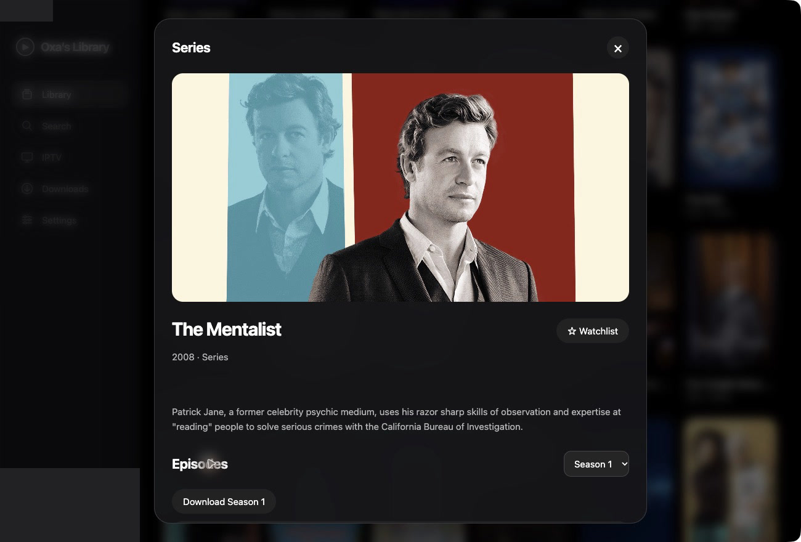

One free, open-source library for the films, series and live TV you already have. On iPhone, Mac, Windows and the web.
Everything you watch, in one place.
Continue Watching, your watchlist and every connected source share one view. Pick up a film, open a series or see what’s on live.

What it brings together.
Your sources
Several sources appear together in one library.
Watching
Your progress follows you from screen to screen.
Live TV
Live channels and their guide get a tab of their own.
Your own media server, with artwork, seasons and resume points.
From install to tonight’s episode.
To begin, add a source. Enter a Jellyfin, Plex or Emby address, a playlist or a library URL. The app suggests huhu.to when you start, and you can remove it at any time.

Then your library fills in. Films and series arrive with their artwork, seasons and episodes, ready to browse on a phone or a large screen.

When you stop, Oxa remembers. Pause on your phone and resume at the same second on your Mac. Sign in with email to sync progress and your watchlist; the account is optional.

Before a trip, save a season. Download single episodes or a whole season in the iPhone, Mac and Windows apps, then watch without a connection.

Get Oxa’s Library.
For your Mac
Version 1.0.1 · macOS 14 or later
Open the disk image and drag Oxa’s Library to Applications. The app is ad hoc signed and not notarized, so macOS may ask you to allow it in Privacy & Security.
A few answers.
Does Oxa include films or channels?
No. Oxa’s Library plays the sources you add. You need permission to access and download their media.
Do I need an account?
No. Your library can stay on your device. Email sign-in is optional and turns on sync. Apple and Google sign-in are not included.
Will every stream play?
No. Provider restrictions, expired links, DRM and unsupported codecs can stop playback or offline saving. In the web app, many hosted servers open on their own site instead.
Can I reach my home server anywhere?
Only if your server is reachable from the network you are on. An account syncs connection settings; it does not open a private home server to the internet.
What happens after a password reset?
Your sources, viewing history and watchlist stay. Older encrypted sources need a one-time transfer from an updated device that already has them.
Is it really free?
Yes. The apps and the web app are free, the code is open source under the MIT licence, and there are no ads or subscriptions.